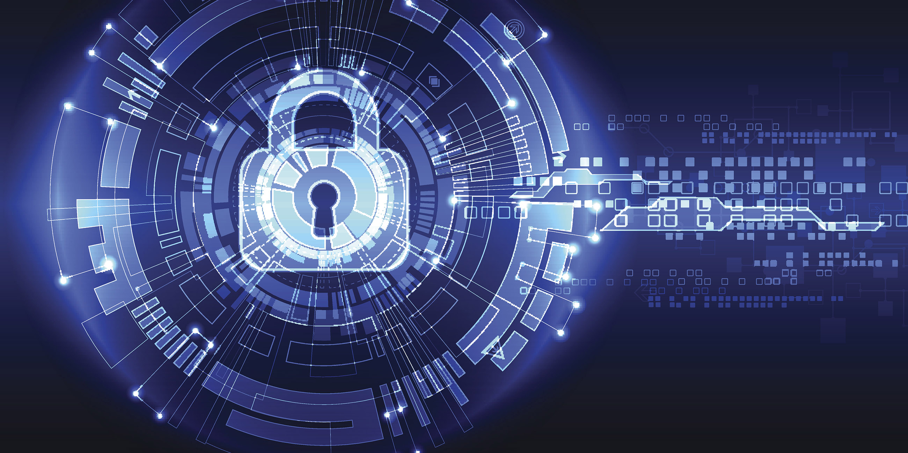

Our Value
In the fast-evolving world of cybersecurity, where digital threats are on the rise, success in business hinges not only on technical expertise but also on a set of core values that define a company's character and approach. These values guide decision-making, shape organizational culture, and play a pivotal role in building trust with clients and partners. In this essay, we delve deep into the values that are indispensable for a cybersecurity company to chart a path to success.
Integrity is a cornerstone value in the cybersecurity realm. It's more than just a buzzword; it is the bedrock upon which every cybersecurity company must build its foundation. Integrity encompasses unwavering honesty, transparency, and a steadfast commitment to ethical conduct. In an industry where the protection of sensitive data, intellectual property, and critical infrastructure is paramount, integrity serves as the linchpin of trust. Upholding the highest moral and professional standards is not just an option; it's a necessity. Integrity is not a value to be compromised; it's the value that defines a cybersecurity company's character.
A client-centric focus is another foundational value. Cybersecurity companies exist to serve and protect their clients. A client-centric approach goes beyond just delivering services; it means actively listening to clients, understanding their unique needs and concerns, and customizing solutions that address these specific requirements. This approach fosters long-term partnerships and cultivates client loyalty, both of which are invaluable for sustained success in a competitive industry.
Expertise and continuous learning are values deeply rooted in the ethos of cybersecurity. The landscape is marked by rapid technological advancements and an ever-evolving threat landscape. To be effective, a cybersecurity company must commit to staying at the cutting edge of knowledge and expertise. Encouraging the professional development of the team, promoting certifications, and ensuring that every team member remains updated with emerging threats and technologies are integral aspects of this value.
Innovation and adaptability are values that go hand in hand with the dynamic nature of cybersecurity threats. The adversary is constantly evolving, necessitating creative responses. Innovation fuels the development of novel solutions, while adaptability enables a company to flexibly respond to new challenges and opportunities. These values empower a cybersecurity company to remain ahead of the curve, offering clients innovative solutions that effectively mitigate emerging risks.
Quality assurance is central to the delivery of cybersecurity services. Clients rely on cybersecurity companies to protect their digital assets, making the assurance of quality services imperative. Rigorous testing, validation, and adherence to best practices are the cornerstones of this value. Consistently providing high-quality service, whether in penetration testing, threat detection, or risk assessment, builds a reputation for reliability and excellence.
Collaboration and partnerships are not just values but strategic imperatives in the cybersecurity industry. Given the complexity and diversity of threats and challenges, no single entity can comprehensively address all potential risks. Building strategic partnerships with other cybersecurity organizations, technology providers, and industry associations enhances capabilities and creates a broader network of resources to draw upon when facing sophisticated threats.
Trustworthiness and reliability are values that clients hold dear. A cybersecurity company's ability to maintain trust through consistent reliability and effective solutions is paramount. Trust is a currency in this industry, earned through dependable performance and ethical behavior.
Embracing and embodying these values in every facet of business operations is what distinguishes successful cybersecurity firms from the rest. Success in this industry is not merely measured by profits; it is measured by the trust clients place in the company's ability to protect their digital assets in an increasingly interconnected and vulnerable world. These values are the compass that guides a cybersecurity company towards a future defined by security, resilience, and ethical integrity.